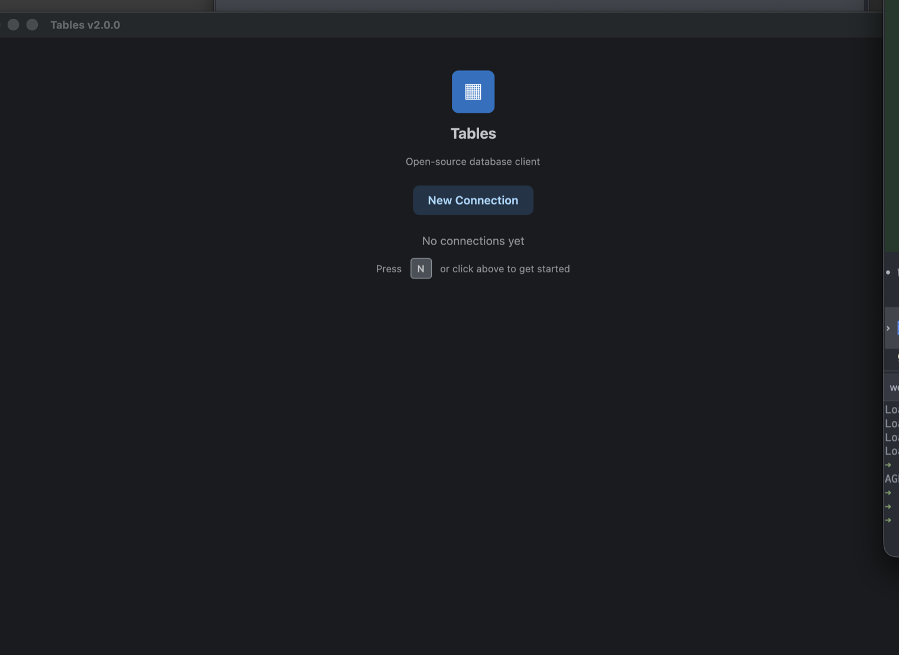

Move through real data without the drag.
Server-side paging, sorting, filters, and a dense native grid keep large tables legible.
Native Rust. Local by design.
Browse data, write SQL, inspect schemas, and ship precise changes without losing your place—or sending your data anywhere else.
status is processingANDtotal > 100| id | customer | status | total | createdat ↓ |
|---|---|---|---|---|
| 48291 | Amara Okafor | processing | $184.20 | Jul 16, 09:12 |
| 48288 | Marc Vidal | review | $942.00 | Jul 16, 08:57 |
| 48279 | Yuna Park | processing | $218.45 | Jul 16, 08:41 |
| 48264 | Nora Singh | shipped | $128.10 | Jul 16, 08:19 |
| 48251 | Leo Anders | review | $516.80 | Jul 16, 07:48 |
One native workspace
Three database families
Zero telemetry
Plain local files
Built for the loop
Server-side paging, sorting, filters, and a dense native grid keep large tables legible.
Run multiple statements, revisit history, save favorites, and turn results into quick charts.
Stage cell edits and deletes, inspect the generated statements, then commit the batch.
Inline changes stay pending until you review them. Sort, filter, resize, inspect full values, and move across wide data without leaving the table.
Read the data guide →UPDATEordersstatus = 'shipped'where id = 48288
UPDATEorderstrackingcode = 'TRK-88419'where id = 48288
DELETEorderswhere id = 48107
select date_trunc('month', createdat) as cohort,
count(*) as customers,
round(avg(lifetimevalue), 2) as avgvalue
from customers
where createdat > now() - interval '1 year'
group by 1 order by 1;A focused editor, multi-statement results, history, favorites, and exploratory charts. No browser runtime between your keystroke and the query.
Read the query guide →Tables keeps the workflow consistent while respecting the systems underneath.
Native types, schemas, indexes, foreign keys, and SSL.
One browsing and editing flow across the protocol family.
Open a local file and work instantly.
The actual app
Rendered with gpui and guise, backed by async sqlx on one Tokio runtime.

Fast enough for the daily loop. Transparent enough for the important changes.